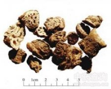

藕节

拼音
ǒu Jié
别名
藕节巴
来源
本品为睡莲科植物莲Nelumbo nucifera Gaertn. 的干燥根茎节部。秋、冬二季采挖根茎（藕），切取节部，洗净，晒干，除去须根。
生境分布
主产浙江、江苏、安徽。此外，湖北、湖南、山东、河南、江西、福建、河北等地亦产。
药材特点
莲 多年生水生草本。根茎横生，肥厚，节间膨大，内有多数纵行通气孔洞，外生须状不定根。节上生叶，露出水面；叶柄着生于叶背中央，粗壮，圆柱形，多刺；叶片圆形，直径25-90cm，全缘或稍呈波状，上面粉绿色，下面叶脉从中央射出，有1-2次叉状分枝。花单生于花梗顶端，花梗与叶柄等长或稍长，也散生小刺；花直径10-20cm，芳香，红色、粉红色或白色；花瓣椭圆形或倒卵形，长5-10cm，宽3-5cm；雄蕊多数，花药条形，花丝细长，着生于托之一；心皮多数埋藏于膨大的花托内，子房椭圆形，花柱极短。花后结“莲蓬”，倒锥形，直径5-10cm，有小孔20-30个，每孔内含果实1枚；坚果椭圆形或卵形，长1.5-2.5cm，果皮革质，坚硬，熟时黑褐色。种子卵形，或椭圆形，长1.2-1.7cm，种皮红色或白色。花期6-8月，果期8-10月。
性状
本品呈短圆柱形，中部稍膨大，长2～4cm，直径约2cm。表面灰黄色至灰棕色，有残存的须根及须根痕，偶见暗红棕色的鳞叶残基。两端有残留的藕，表面皱缩有纵纹。质硬，断面有多数类圆形的孔。气微，味微甘、涩。
性味
甘、涩，平。
功能主治
止血，消瘀。用于吐血，咯血，尿血，崩漏。
用法用量
9～15g。
化学成分
藕节含鞣质、天门冬素。
药理作用
1：止血：藕节热水提取物1g/kg腹腔注射：可以缩短小鼠切尾出血的时间
摘录
《中国药典》